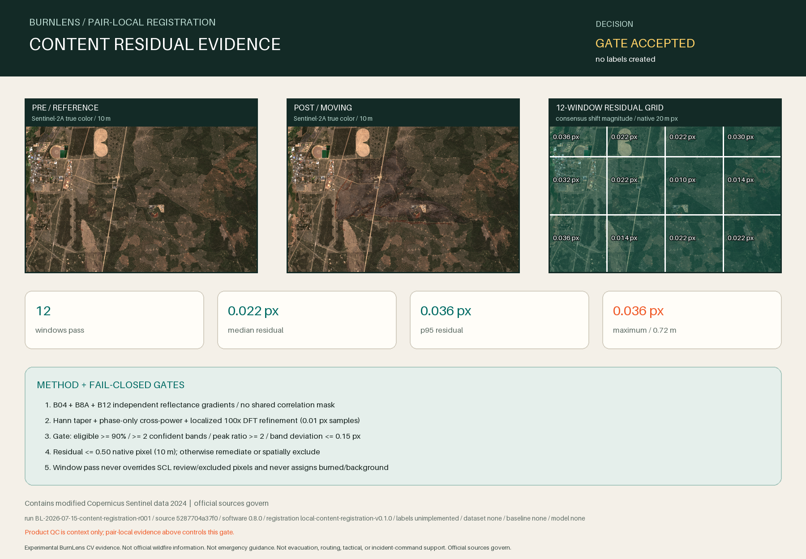

Experimental BurnLens CV evidence. Not official wildfire information. Not emergency guidance. Not evacuation, routing, tactical, or incident-command support. Official sources govern.

Decision
ACCEPT_LOCAL_CONTENT_REGISTRATION
Accept the exact pair's measured local content registration for the frozen AOI. Every fixed window passes the residual, confidence, band-consensus, and usable-coverage gates. Pixel-level review and exclusion states remain unchanged, and no label has been created.
Machine gate: PASS_LOCAL_CONTENT_REGISTRATION_GATE.
What was measured
Independent pre and post native-20m B04, B8A, and B12 reflectance gradient magnitudes; each gradient is clipped at its own AOI 1st/99th percentiles.
- phase-only cross-power spectrum with localized upsampled DFT refinement; 100x refinement.
- 4 columns x 3 rows; 12 non-overlapping 150 x 150 native-20m windows covering the AOI.
- A shared stable/quality mask can manufacture a zero-shift correlation peak. Pair quality is used only to classify window usability and never multiplied into either correlation signal.
- NIFC geometry, dNBR, VIIRS observations, burn/background assumptions, and label thresholds do not select pixels, windows, peaks, or decisions.
Window evidence
| Window | State | Row shift to apply (px) | Column shift to apply (px) | Magnitude (px) | Eligible pixels | Reason |
|---|---|---|---|---|---|---|
W-R01-C01 | pass | -0.0300 | -0.0200 | 0.0361 | 96.94% | CONTENT_REGISTRATION_PASS |
W-R01-C02 | pass | -0.0200 | -0.0100 | 0.0224 | 99.95% | CONTENT_REGISTRATION_PASS |
W-R01-C03 | pass | -0.0200 | -0.0100 | 0.0224 | 100.00% | CONTENT_REGISTRATION_PASS |
W-R01-C04 | pass | -0.0300 | 0.0000 | 0.0300 | 99.98% | CONTENT_REGISTRATION_PASS |
W-R02-C01 | pass | -0.0300 | -0.0100 | 0.0316 | 99.55% | CONTENT_REGISTRATION_PASS |
W-R02-C02 | pass | -0.0100 | 0.0200 | 0.0224 | 98.22% | CONTENT_REGISTRATION_PASS |
W-R02-C03 | pass | -0.0100 | 0.0000 | 0.0100 | 94.96% | CONTENT_REGISTRATION_PASS |
W-R02-C04 | pass | -0.0100 | -0.0100 | 0.0141 | 99.98% | CONTENT_REGISTRATION_PASS |
W-R03-C01 | pass | -0.0300 | -0.0200 | 0.0361 | 99.98% | CONTENT_REGISTRATION_PASS |
W-R03-C02 | pass | -0.0100 | -0.0100 | 0.0141 | 100.00% | CONTENT_REGISTRATION_PASS |
W-R03-C03 | pass | -0.0200 | -0.0100 | 0.0224 | 97.71% | CONTENT_REGISTRATION_PASS |
W-R03-C04 | pass | -0.0200 | -0.0100 | 0.0224 | 99.70% | CONTENT_REGISTRATION_PASS |
Product QC caveat
Both packaged datastrip reports have global status PASSED. They also state that VNIR/SWIR bands have not been registered and that spatio-residual histograms were not computed. Product QC is provenance context, not this pair-local gate.
Traceability
Run: BL-2026-07-15-content-registration-r001
Git source: 5287704a37f03d96e47467afba8623f7be643129
Software / report / method: 0.8.0 / content-registration-evidence-v0.1.0 / local-content-registration-v0.1.0
AOI / target / label protocol: aoi-darlene3-model-v0.2.0 / target-burn-scar-v0.2.0 / burn-scar-label-protocol-v0.1.0 (unimplemented)
Package / contract: darlene3-s2-optical-pair-v0.1.0 / optical-pair-intake-contract-v0.1.0
Application / dataset / baseline / model: none / none / none / none
Boundaries
- A pass is registration evidence, never burned/background truth.
- Pixel-level review and exclusion states remain binding.
- No label array, dataset, split, baseline, model, metric, application, deployment, operational result, or field validation was created.
- Contains modified Copernicus Sentinel data 2024. Official sources govern.